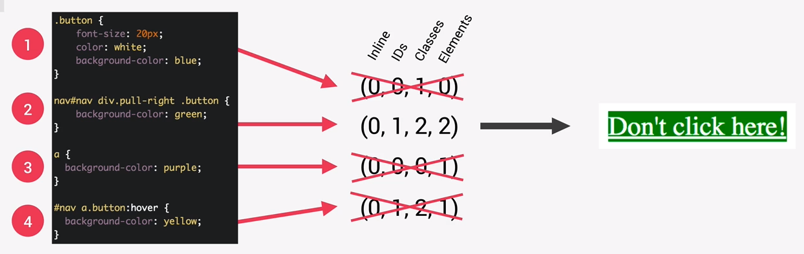

When the browser attempts to understand which CSS rule takes priority, it calculates importance, specificity, and source of the values.
Importance is calculated in this order.
If importance is the same, specificity is calculated in this order, assigning 1 point each.
If the importance and specificity are the same, source is determined.
The last CSS written in the code is the one that is applied.
Style sheets take precedence in the HTML top-down. If you're linking from 3rd party CSS sheets, make sure your custom style sheet is the last in the HTML code.
The !important declaration forces a less important CSS value to take priority over one with more importance.
Try to use this rarely as it can cause problems/confusion long-term.
Try using more specificities in order to write more maintainable code.
Two different CSS declarations are created for a button.
The button should be red since the declaration is more specific and takes priority over a more simple declaration.
div .btn { background-color: red; } .btn { background-color: yellow; } <div> <button>Click Me<</button> <div>
When !important is used on the less specific declaration, it takes priority.
div .btn { background-color: red; } .btn { background-color: yellow !important; } <div> <button>Click Me<</button> </div>
In this example, all values have the same importance since they are all author values.
Because of this, the specificity must be calculated.
Selectors are viewed from LEFT to RIGHT, so if there is a 1 value for Inline, that will take precedence over any to the right of it.
But if there are multiple declarations with the same selectors, the # of those selectors must be added up. The higher number takes precedence.
The universal selector * has zero precedence. (0, 0, 0, 0).
There are 3 declarations for the button.
The 2nd one has the highest value (from Left to Right), so it takes precedence.
This is called the Cascaded value.
